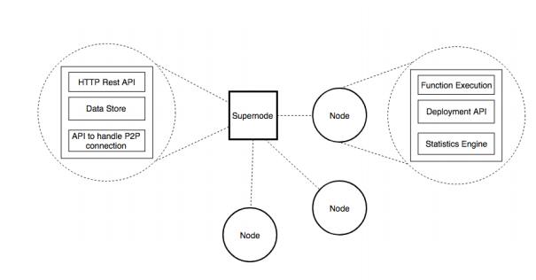

Literature Survey 
The area of Decentralized applications has gained traction recently. With static content sharing networks such as IPFS, and browsers such as beaker browser, mist, decentralization of the internet has begun. Introduction of Orb with its unique capability of providing Serverless functions replicated and decentralized through a network of nodes with a unique Rewarding system, the users are able to deploy Serverless functions which could be used as services in a more decentralized internet. The idea of services being decentralized is unique. Therefore, there were no direct similar work which is equivalent to Orb but there were systems built focusing on the decentralization, Reward Distribution, Static content Distribution and Torrents. The commercialization of the orb is achieved by attracting users to use the network as service providers or service users.
1. AWS Lambda
Amazon web services lambda is also providing server space for the functions to be deployed. With
AWS Lambda, it’s possible to run code for virtually any type of application or backend service
- all with zero administration. AWS Lambda runs the code on a high-availability computer
infrastructure and performs all of the administration of the computer resources, including server
and operating system maintenance, capacity provisioning and automatic scaling, code monitoring
and logging. Comparing Orb to Lambda is impossible since the concept of Lambda is more
centralized where as Orb is fully Decentralized. But the idea of focusing more towards the service
itself rather than relying on background is common to both AWS Lambda and Orb.
2. Steemit
Steemit is a social network and a content rewards platform that makes the crowd the
beneficiaries of the attention economy. It does this by rewarding users with STEEM. Steemit is a
social media platform that works by having the crowd reward the crowd for their content. It does
this thanks to the Steem blockchain[18] and cryptocurrency; Steem is 'minted' daily and distributed
to content producers according to the votes they get. Most social media sites extract value from
their user base for the benefit of shareholders alone. Steemit is different, it's a new kind of attention
economy.
By connecting with the Steem blockchain (which is decentralized and controlled by the
crowd), Steemit users receive all the benefits and rewards for their attention. More similar
principals are used in Steemit Rewarding System and Orb but Rewards are for two different
reasons. Steemit focuses more on Rewarding users that have written, contributed and read Steemit
articles whereas Orb focuses more on the deployment, contribution, seeding and consumption of
functions
3. IPFS
IPFS is a distributed file system that seeks to connect all computing devices with the
same system of files. IPFS is a versioned file system that can take files and manage
them and store them somewhere and then tracks versions over time. IPFS also
accounts for how those files move across the network so it is also a distributed file system.
4. Storj
Storj is a platform, cryptocurrency, and suite of decentralized applications that allows you
to store data in a secure and decentralized manner. Storj can be faster, cheaper, and more
secure than traditional cloud storage platforms.
Faster because multiple machines are
serving you your file simultaneously, cheaper because you are renting people's spare harddrive
space instead of paying for a purpose-built data center, and more secure because
your file is both encrypted and shredded. Storj uses blockchain features like a transaction
ledger, public/private key encryption, and cryptographic hash functions for security. The
decentralized aspect of Storj means there are no central servers to be compromised, and
with client-side encryption, you are in control of the keys to your files.
Research gap
Decentralized FaaS is a new concept which didn’t exist up to now. Despite the FaaS
Service providers which exist today, none of them offers a decentralized solution.
Although there are many service providers which provide server space to deploy our
application, most of them work in a centralized manner.
But there are no solutions which
provide this service in a decentralized manner. As for the FaaS is concerned, there’s no
proper way or existing systems which use the concept of decentralized FaaS as of today.
The reason why someone would decentralize a function is the avoidance of any central
points of failure. Developers can create, deploy and monetize serverless functions
completely anonymously and users can consume them in full privacy. In a typical
environment, the traffic can be intercepted through a single point using a load balancer
and routed to different servers. But in “Orb”, each supernode acts as a load balancer itself.
Function calls are mediated by super nodes depending on the latency and number of
requests per second automatically balancing the traffic.
The attractive feature why a user would host a function on their own machine is, hosting
a function in their own machine will make the node eligible for payment through an
Ethereum contract, a user subscribes to, at the time of deployment. The payments model
works as pay per request terms. More traffic will generate more income. The advantage
of such a model is that user itself can host and deploy at the same time. Then the
deployment cost can be prevented by hosting and contributing more towards the growth
of the network.
The user will use Orb instead of uploading it in AWS or any other because, decentralizing
cuts the cost, makes the owner completely anonymous, all the transactions made are
verified and more contributions from the user to the network will be paid in terms of ether.
Data ownership and central authority are prevented completely from this approach. At the
end the user gets rewarded which will be proportional to the contributions made to the
system.
Decentralization comes with drawbacks. Once deployed, how can the owner modify or
deprecates the function? In a decentralized environment, it’s difficult to update functions.
Updates should be managed as versions of that function and tracker always choose the
latest version of the requested function. The older version will get deprecated once the
user issues a request.
What are the measures for Security at nodes in the system? By default, the system will not
have a central point of failure, which makes the system fully tolerant to DDoS(Distributed
Denial of Service) attacks. The system is also resistant to Man in the middle attacks as
function calls will be redirected through supernodes. Each time, the user might call 2
different nodes in 2 different locations by avoiding a specific route. Only an executable of
the function will be deployed (without the source code) as a security mechanism. To
ensure that the decentralized functions are not changed, the supernodes will automatically
verify by comparing a dynamically generated hash and the existing hash, each time a peer
comes live.
Research Problem
Today, most of the web services are built around centralized client server architecture. With the dawn of Serverless computing, usage of Serverless functions have gained traction. In fact, many colorations have integrated Serverless functions to their core web services. The main advantage of using Serverless functions is that the developers can focus more towards the implementation of the function rather than integrating the function with a complex API just to provide an endpoint for consumption. Serverless functions save time, energy and cost. But these systems comes with few drawbacks as mentioned below.
1. Single Authority
AWS provides EC2 service which is used to create virtual machines. The users can easily deploy
web services/applications to EC2. EC2 has built in auto-scaling and have higher reliability
(availability rating of 99.9974 percent, Cloud Harmony reported). Hence more users are attracted
to AWS and from an outside perspective, AWS’ dominant share (40 percent) of the public cloud
services seems like a monopoly in nature. Shares owned by Microsoft Azure (15 percent),
Google’s cloud (7%), and the remaining small percentages picked up by IBM, Oracle, and other
small players in cloud service compared to AWS. Therefore, if AWS suffers from a downtime,
users won’t be able to access 40% of the web services. It’s analogous to a massive breakdown of
the internet services, similar to the massive internet outage happened on February 28th, 2017.
Decentralization eliminates the single authority problem
2. Data Owned by 3rd Parties
Deploying a function to a third-party services provider always has its drawbacks. The organization
automatically gets the ownership and access to the data. Although service providers like AWS
could be trusted, there is always a risk. In a decentralized system, data is stored in a collection of
nodes. Therefore, a single entity won’t be able to control how the data is stored in the system.
3. Central Point of Failure
The classic definition of single point of failure is of a potential risk posed by a flaw in the
design, implementation or configuration of a circuit or system in which one fault or malfunction
causes an entire system to stop operating. This problem persists in a small or medium-sized
business where the entire business logic is hosted in a single centralized server. Since that business
might run low on profit affording for cloud computing / AWS will hardly be possible.
Decentralized systems doesn’t have this problem.
4. Most Systems are not scalable by default
Most cloud services serve a large number of clients, thereby generating log of API load. In order
for a system to handle traffic continuously and to serve for incrementing demand, there must be a
way to scale up the system horizontally and vertically. Vertical Scaling includes hardware
upgrades done to the server which increases the cost of hosting the web service.
Horizontal scaling
is achieved by deploying load balances which proxy requests into few identical instances running
the same web service. Running parallel instances cost the user. Generally in AWS, features like
horizontal scaling must be setup of manually. AWS ECS and google App Engine SaaS supports
horizontal scaling by default. But in the decentralized system, adding more nodes will
automatically scale up the system effortlessly.
5. Centralized Systems Generate More Traffic
Since all the business logic implemented as a web service is aggregated in a central location, all
the clients calling the same instance in parallel increases the load average of the server, if not load
balanced, which is another configuration overhead. Not adhering to best practices such as load
balancing cloud lead to a system failure. Decentralization of
the system could prevent from the traffic generation problem since the service is fully decentralized
over a set of nodes
6. Security of Data
Due to the centralized nature of the system, the system is vulnerable to attacks such as DoS, DDoS,
Man in the middle attack and hacking. There are security measures like https, end to end
encryption which can provide some security against the attacks. But decentralizing the system
would eliminate DoS, DDoS and man in the middle attacks completely.
Research objectives
Main objectives of this research component is to explain how todecrease latency of data communication between the nodes and the super nodes, function consumption, editing, reverting and securely distribution. Finding mechanisms to reduce the node discovery times depending on the network, the nodes reside.
1. Bi-directional Data communication between Nodes
A Research constraint will be to overcome the communication
between nodes, super nodes behind NATs. The possibility of creating a new protocol to transmit
data between the private and public networks is explored. Also the data communication must be
secure, therefore, usage of secure web sockets for data communication is defined. The mechanisms
to consume a function, edit, roll back a function and to distinctively identify a function from the
user is a challenge which is also elaborated.
The clients should be able to consume a function
deployed into the network by initially establishing a connection to the network. In order to achieve
function consumption, the client must be able to find the hosted nodes the network and execute
the function from the nearest possible node with lower latency to increase the efficiency.
2. Deployment framework to deploy functions
Deployment framework is built on top of node infrastructure at client end to facilitate hosting and
seeding functions. This resides behind the user and act as a wrapper for the API. Client Software
is the GUI for the client. This facilitates from Registration of the user to Deploying a function.
Steps include; authenticating user in the decentralized network, logging to the system, writing a
function, obfuscate the function, packaging and deploying a function, providing access tokens for
the specified function. Main purpose of this is to bridge the gap between client and network
infrastructure.
Security is maintained throughout the system from registration of user to function deploying and
calling. Although this is a decentralized system, security is good than a centralized network.
Decentralized network is proof of DDoS attacks since all requests are routed in the system via
supernodes. Socket.io plays a role is securing network proofing external attacks.
Packaging is done for security purpose and easy of sharing. JavaScript function is packaged (using
a node library called ‘pkg’) before deploying.
Obfuscation is the process of making something difficult to understand. JavaScript function is
obfuscated because it’s an intellectual property and it prevent an attacker from reverse engineering
function in the network. It normally renames useful class and variable names to meaningless labels
or adding unused or meaningless code to an application binary. The output after obfuscating is
harder to read and understand.
3. Booting up and Scaling Orb
This will give a basic idea of key components that are existing in the platform, how they interact
which each other, how system initially boots up and communication mechanism of the platform
network architecture underneath the real architecture and to address the problem of communication
gap between public to private network and build bridge between them.
Initially when the system boots up, there are only known super nodes. When user install client
application client application know what are super node are existing in network. These nodes are
connecting socket streams. Which allow platform to communicate bi-direction. When a client gets
registered in the system, Super Node identify it as a node. Node is identified using unique Orb id.
Even after every node addition, Super Node populates its data which is saved in a DHT throughout
the network. This makes the transparency between Super Node like nodes feel it as a central
computer.
4. Rewarding System
The function owner initially hosts his own function and if some user is interested in hosting it, he
can seed it to be used by requesters. When requester, request for a specific function the function
owner and the seeder both gets rewarded as per the requests for a pre-defined ratio.
Validating the requests mainly focuses on blocking, function owner or seeder to send requests to
its own function and corrupt the rewarding system. For the above-mentioned function finding out
a secure mechanism to prevent DoS of attacks which lets a node earns money by sending pings
should be done.
Methodology
When the client starts the Orb client software, it will send a request to the supernode and the supernode will start to keep a track of the particular node.
When the user uploads a function through the client, the client will ask the user to subscribe to a payments plan (an ethereum smart contract). Then function will run on the same client machine first. Then function source code will be run through a hash function and hashed. This will generate an initial hash which can be used to identify the function. Also, a key pair will be generated for a particular function. Then the function will be converted to an executable file. Then function will be sent to the supernode.
The supernode will initially run the function, generates an URL and send to the deployed user. Then supernode will look for the live nodes list and sends a notification about the availability of the function. The nodes can now choose to run the function or not. This way, the functions will be distributed throughout the network.
1. Network Infrastructure

2. Node
Node represent a personal computing device with the Orb
client software installed. The responsibilities of the node
include deploying a function to the Orb, keeping a track of
other nodes and super nodes, ability to download an available
function from the supernode and hosting it on the node. Hosted
function on the client machine will generate income in terms
of Crypto Currency for the user.
The user can subscribe to a
payments model when deploying an application. The client
nodes will have a wallet to secure the payments received.
Node will consist of the Multiple replicas of the same function
will be deployed in different nodes and a supernode will
automatically deploy the function when there are no active
nodes available to ensure that the functions deployed are
available.
3. Supernode
Super node represents a node with the Orb server installed.
Keeping a track of nodes and super nodes, API endpoint generator
to provide a unique endpoint to consume the deployed
function, REST API to communicate with the outside world
for data analytics are the main functionalities of a super node.
A user can choose to be a super node. But in order to be
a super node, it must be on a public network with a public
domain name assigned to it.
4. Function as a service provider
The user doesn’t have to configure a server resources such
as storage, memory. This is because, the Orb calculates the
complexity of the function by executing it.
Then the function
is only distributed across the nodes which can only serve the
computational requirements of the functions. The user deploys
a function and an endpoint will be generated and sent to
the user. Even though configuration overhead is eliminated.
The functions cannot be edited or removed easily due to the
decentralized nature of the system.
5. Bootstrapping Node
Bootstrapper node provides initial configurations for newly
joining Nodes and Trackers. It helps to establish initial connection
with existing Nodes and Trackers in the system. When
a node or supernode wants to connect with the system, it
establishes an initial connection with bootstrapper node. Then
bootstrapper provides details about supernodes. Then node or
supernode can successfully establish the connection with the
system.
6. Payment model
Decentralizing server space to host a function makes services
provided more reliable. Decentralized Functions as a
service or in one term, “Orb“ grant the user the privilege
of enjoying a reliable secure and cost-effective service. The
purpose of “Rewarding system” in orb is simply to provide
it’s users who act as function seeders, owners and requesters
a payment model which acts in a logical manner to provide
fair rewards to all.Payment Model based on requests served
by a node.
7. Updating and deprecation of the function
The deployed user can initiate a function deprecation or
an update. Then this request will be propagated through the
network. The updating and deprecation process will be slow
since the system is decentralized.
Orb will simply minimize
the risk of single point of failure since multiple nodes hold the
responsibility of function availability. In any system usually,
trade-offs are done considering efficiency, reliability security
scalability etc. A decentralized index approach tends to be
more robust (no single point of failure), but it is usually
tricky to make it as efficient as a centralized approach.
Scaling will not cost extra money anymore.
In real world if
the system/software becomes bigger the servers should scale
horizontally or vertically. We can scale our own machines
or use the most common method of using a cloud services
platform but both methods are costly using Orb the expenses
for scaling can be reduced and can be controlled. The function
owner can monitor the usage and if that function exceeds
request limit the owner of the function must pay all the hosted
nodes through an Ethereum contract.
When the user puts the
requested amount of ether to the contract, will be distributed
among the nodes based on the involvement of nodes. Free
server spaces can be utilized to a worthy cause Starting from a
smart phone up to a server farm anyone interested can provide
server space and earn extra rewards. This will reduce the cost
for scaling which is beneficial for the function owner and
reward the nodes who provide server space.
Technologies Used
For the implementation of the client software we use Electron (https://electronjs.org/). It’s a
framework for building native applications using technologies like JavaScript, HTML, CSS. It
provides native menus, UI elements and notifications for Windows MacOS and Linux. It also
handles crash reporting, debugging and profiling. Electron has windows installers also.
Our electron app basically contains a dashboard, inline code editor, Orb wallet, function deploying
interface. Inline code editor enables the user to write code in the application itself. Then these
functions are saved as Javascript files. Later these are obfuscated for security purposes.
When user wants to use a function, application inputs function to a Javascript interpreter and
execute it real-time.
Socket.io has implemented Socket.io P2P that can be used to create a bidirectional event channel
between peers. It’s easy and reliable way to setup a WebRTC (Web Remote Web Client) using
that protocol.
1. Socket.IO - http://socket.io
2. ElectronJS - https://electronjs.org/
3. Socket.IO - https://github.com/ethereum/web3.js/